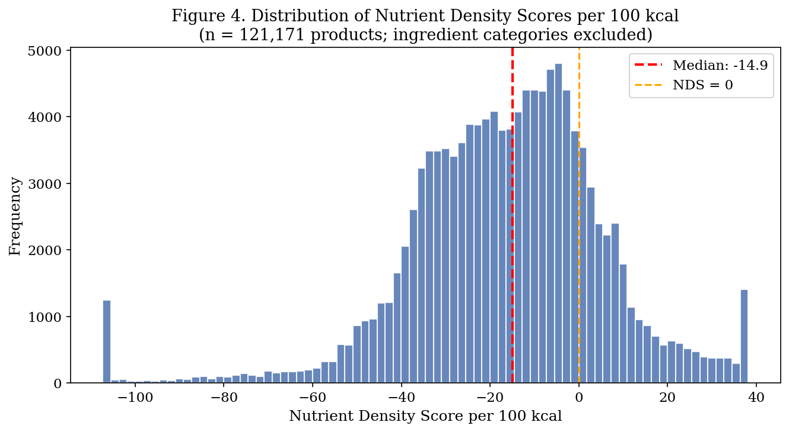

Nearly 80% of branded foods score negative.
You get a product-level nutrition score for USDA branded foods. Shoppers compare what matters at the grocery store: protein, fiber, sodium, saturated fat, and sugar per 100 calories.
79.5%of scored products land on a negative Nutrient Density Score
-14.9median score across 121,171 scored products
343food categories ranked after ingredient categories were removed
175kUSDA branded food products analyzed
